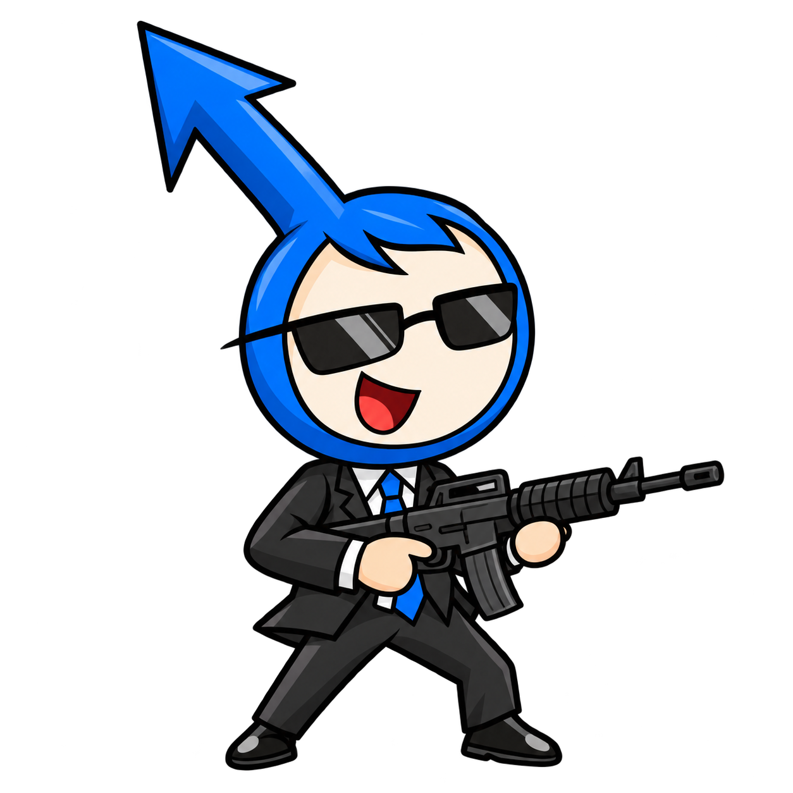
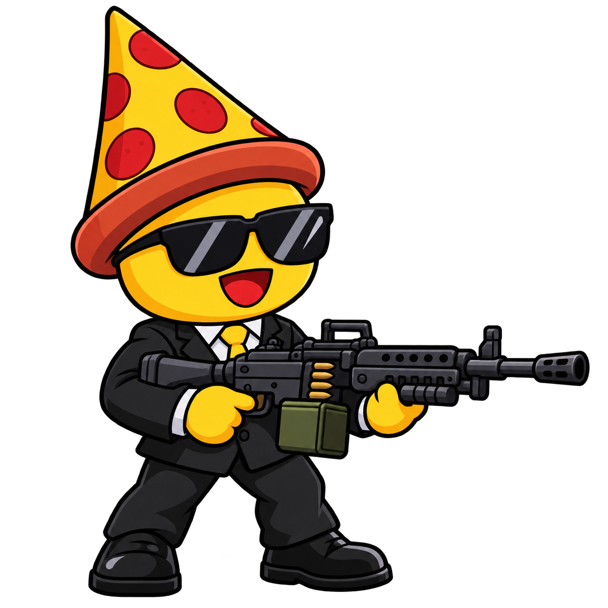
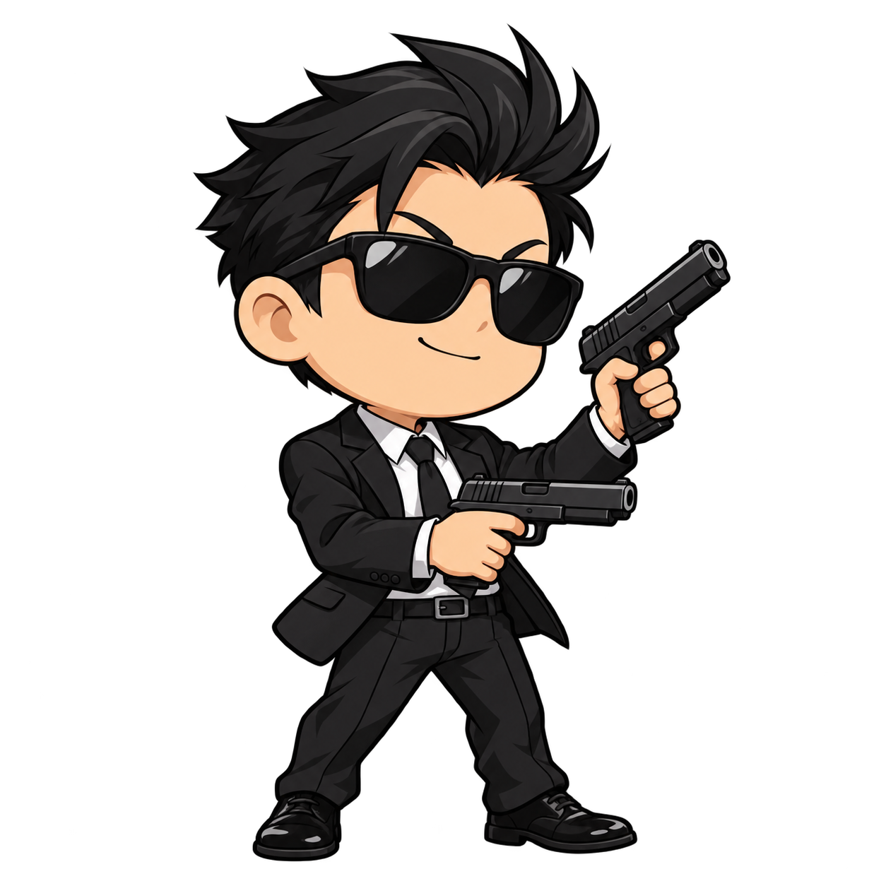
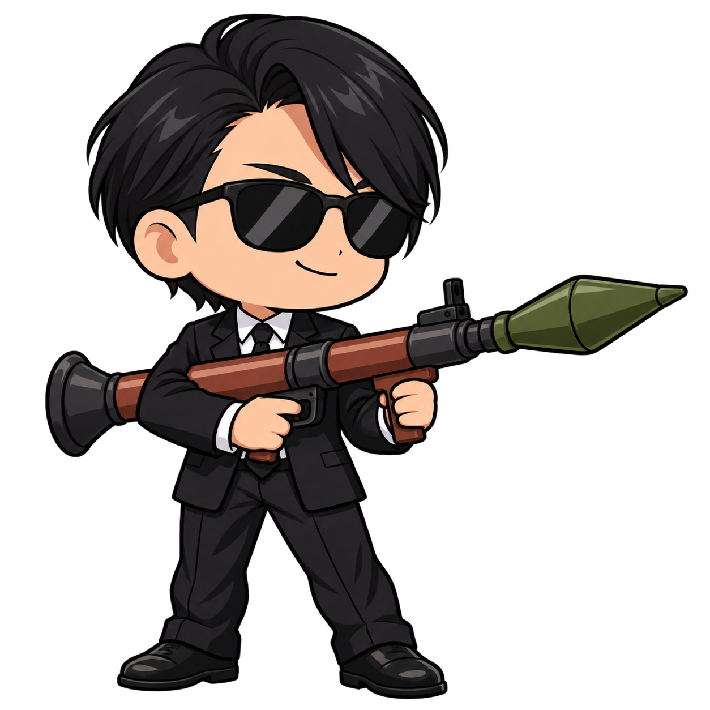
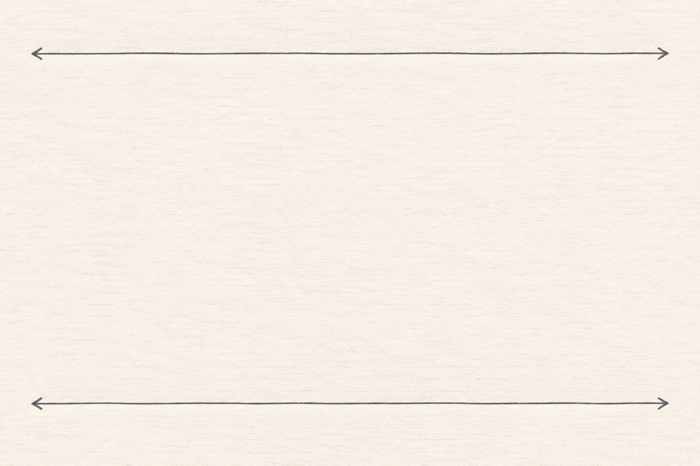
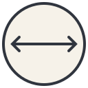
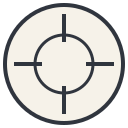

게임 기획 메모 → 개발용 에셋
온이름 · 피자럭스 · 요원 1 · 요원 2. 원본의 정장, 선글라스, 머리 장식과 무기를 살린 캐릭터입니다.
문서 안내 · 에셋 명세 JSON

지구방위팀 · 돌격소총

지구방위팀 · 기관총

ISB팀 · 쌍권총

ISB팀 · RPG
캐릭터는 투명 PNG 정적 포즈입니다. 아래 화면은 에셋 확인용이며 플레이 가능한 게임이 아닙니다.



 지구방위팀
지구방위팀 ISB팀
ISB팀